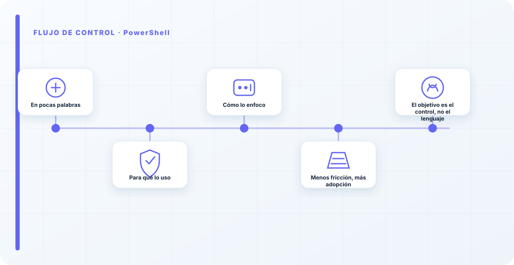
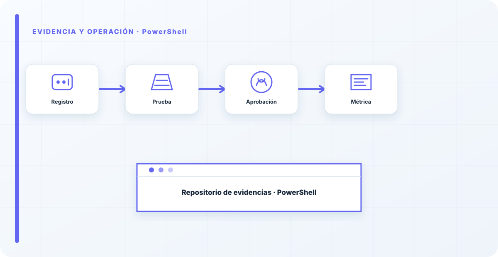

En pocas palabras
En un mundo Windows y de directorio corporativo, PowerShell es la herramienta natural para llevar los controles de IA a donde ya vive tu organización. El principio es el mismo que con Python —automatizar la comprobación para que no dependa de la memoria de nadie—, pero en el terreno donde ya están tus identidades, tus máquinas y tus permisos. La mejor herramienta para automatizar tus controles es la que ya se usa en tu casa.
Para qué lo uso
Automatizar controles ligados al ecosistema Microsoft: accesos y permisos en el directorio, configuraciones de las máquinas que ejecutan IA, inventario de recursos, y comprobaciones sobre los servicios de IA en ese entorno. Donde la organización ya es Windows, PowerShell es el camino de menor fricción para aplicar y verificar controles.
Aprovecha además toda la integración con la identidad corporativa, que es justo donde se juega buena parte de la seguridad de la IA en la nube de Microsoft: quién accede a qué.
Cómo lo enfoco
Igual que con Python, en su terreno: comprobaciones que se ejecutan solas y avisan cuando algo se sale de la política. La herramienta importa menos que el principio —automatizar el control—; uso la que encaja con la organización en lugar de imponer una por moda.
Esto conecta directamente con la seguridad de Azure OpenAI, donde la identidad y la configuración se pueden automatizar y verificar con estas mismas herramientas.

Menos fricción, más adopción
Una lección práctica: la automatización que se adopta es la que se integra con lo que la gente ya sabe y ya usa. Empeñarse en meter una herramienta ajena al ecosistema, por elegante que sea, añade fricción y hace que los controles automatizados no se mantengan. En un entorno Microsoft, PowerShell tiene la ventaja de que el equipo ya lo conoce.
Y un control automatizado que el equipo entiende y mantiene vale infinitamente más que uno sofisticado que nadie toca por miedo a romperlo.
El objetivo es el control, no el lenguaje
Insisto en algo para que no se pierda entre tanta herramienta: el objetivo no es PowerShell ni Python, es que el control deje de depender de la memoria de alguien. La herramienta correcta es la que tu equipo ya domina y va a mantener. En un entorno mixto, uso las dos sin complejos; en uno puramente Microsoft, PowerShell gana por integración y por conocimiento del equipo.
He visto automatizaciones preciosas en un lenguaje que solo entendía quien lo montó, y que murieron el día que esa persona se fue. Un control automatizado en la herramienta de casa, que el equipo mantiene, vale más que uno elegante que nadie se atreve a tocar.
El mejor lenguaje para automatizar tus controles es el que ya se usa en tu casa. En un entorno Microsoft, empeñarse en otra cosa por moda añade fricción sin ganar nada. PowerShell lleva los controles de IA a donde ya están tus identidades y tus máquinas. Lo importante no es la herramienta, es que el control deje de depender de la memoria de alguien.
Los errores que veo una y otra vez
- Descartar PowerShell por moda en entornos Windows.
- Añadir fricción usando herramientas ajenas al ecosistema.
- No aprovechar el directorio para los accesos a IA.
- Automatizar sin avisar de los fallos.
- Confundir la herramienta con el objetivo.
Cómo lo llevaría a un entorno real
Cuando aterrizo powershell en una organización, no empiezo por comprar una herramienta ni por redactar veinte páginas. Empiezo por dibujar qué ocurre hoy: quién solicita el cambio, quién lo aprueba, qué sistemas intervienen, qué datos cruzan el proceso y quién se entera cuando algo falla. Ese dibujo suele descubrir más problemas que cualquier checklist. En automatización, lo peligroso no es solo carecer de controles; también lo es creer que existen porque alguien los escribió una vez.
Después separo lo imprescindible de lo deseable. Lo imprescindible debe poder comprobarse: un responsable identificado, una regla clara, una evidencia fechada y un mecanismo para reaccionar. En este caso revisaría especialmente PowerShell, módulos y credenciales. No me vale una respuesta del tipo «lo gestiona el proveedor» o «eso lo mira seguridad». Necesito saber qué persona toma la decisión, con qué información y dentro de qué plazo.
La implantación debe crecer con el riesgo. Un piloto interno puede funcionar con una ficha breve y una revisión manual. Un sistema que afecta a clientes, empleados, dinero o información sensible necesita segregación de funciones, pruebas independientes, monitorización y un expediente mantenido. Mi criterio es sencillo: cuanto más difícil sea deshacer el daño, más fuerte debe ser la barrera antes de producción.
Decisiones que deben quedar por escrito
Hay decisiones que no deberían vivir en una reunión ni en un mensaje de chat. Para powershell dejaría documentados el alcance, los supuestos, los límites de uso, las excepciones aceptadas y las condiciones que obligan a detener o reevaluar. El documento no tiene que ser enorme, pero sí debe permitir que otra persona entienda por qué se hizo lo que se hizo.
También registraría quién puede cambiar transcripción, quién valida firma y quién recibe las alertas relacionadas con ejecución. Cuando esas tres responsabilidades se mezclan, aparece el clásico problema: el mismo equipo construye, aprueba y declara que todo funciona. No siempre se puede separar por completo, sobre todo en organizaciones pequeñas, pero al menos debe existir una revisión por alguien que no dependa del éxito inmediato del despliegue.
Las excepciones merecen un tratamiento propio. Una excepción sin fecha de caducidad acaba convirtiéndose en la arquitectura real. Por eso exigiría motivo, riesgo aceptado, responsable, compensaciones, fecha de revisión y criterio de cierre. Si falta uno de esos elementos, no es una excepción gestionada; es una deuda invisible.

Un ejemplo práctico
Imaginemos que un equipo quiere incorporar powershell a un servicio que ya está en producción. La propuesta promete reducir tiempos y automatizar tareas, pero utiliza componentes que cambian con frecuencia. Antes de aprobarlo, pediría una prueba limitada, un inventario de dependencias, un flujo de datos y una definición clara de qué acciones quedan fuera del alcance.
Durante la prueba recogería resultados normales y casos límite. No solo miraría si funciona; comprobaría qué ocurre cuando faltan datos, cambia una versión, se pierde conectividad, llega una entrada manipulada o un usuario intenta superar sus permisos. Ahí es donde se ve si el diseño aguanta. En muchas pruebas felices todo parece seguro porque nadie ha intentado romper la hipótesis de partida.
Si los resultados son aceptables, la salida a producción tendría condiciones: versión fijada, configuración aprobada, logs disponibles, responsables de guardia, procedimiento de rollback y revisión tras las primeras semanas. Si alguno de esos elementos no existe, prefiero retrasar el despliegue. Un día de demora suele ser más barato que investigar después un comportamiento que nadie puede reconstruir.
Qué evidencias guardaría
Para demostrar que el control funciona conservaría evidencias que cuenten una historia completa, no capturas sueltas. La historia debe enlazar necesidad, decisión, implementación, prueba y operación. En powershell eso incluye como mínimo la ficha del activo, el diagrama vigente, la configuración aprobada, el resultado de las pruebas y el registro de cambios.
No guardaría información por acumular. Si los logs contienen prompts, documentos, datos personales o secretos, aplicaría minimización, control de acceso y retención. La evidencia debe ayudar a investigar y auditar sin crear una segunda fuga de información. Es frecuente endurecer el sistema principal y dejar un repositorio de evidencias abierto a demasiadas personas.
- Propietario y finalidad de powershell, con fecha de revisión.
- Inventario de PowerShell, módulos y dependencias asociadas.
- Criterios de aceptación y resultados sobre credenciales y transcripción.
- Configuración efectiva, versión y aprobación del cambio.
- Alertas, incidentes, excepciones y acciones correctivas cerradas.
Señales de que el control no está funcionando
El primer síntoma es que nadie sabe responder con rapidez quién es el responsable. El segundo es que la documentación describe una versión distinta de la que está operando. El tercero es que las alertas existen, pero llegan a un buzón que nadie revisa. Cuando aparecen esos tres síntomas, el problema no es tecnológico: el control se ha desconectado de la operación.
También desconfío de las métricas demasiado perfectas. Cero incidentes, cero excepciones y cien por cien de cumplimiento pueden significar excelencia, pero con frecuencia significan que no estamos mirando. Prefiero indicadores que enseñen tendencia: tiempo de corrección, antigüedad de excepciones, cobertura de pruebas, cambios sin revisión y reincidencias.
Por último, revisaría el comportamiento después de cada cambio significativo. En IA, una actualización de modelo, dataset, prompt, herramienta, permiso o proveedor puede alterar el riesgo sin cambiar el nombre del servicio. Si el proceso solo reevalúa cuando se crea un proyecto nuevo, se quedará ciego durante la mayor parte de la vida útil.
Mi criterio de cierre
Considero que powershell está razonablemente controlado cuando el equipo puede explicar el proceso sin depender de una sola persona, reconstruir una decisión con evidencias y detener el servicio sin improvisar. No busco perfección documental; busco que la organización pueda tomar decisiones repetibles bajo presión.
El cierre no consiste en marcar todas las casillas. Consiste en demostrar que los riesgos relevantes tienen propietario, que los controles se prueban y que las desviaciones producen una acción. Si la evidencia no cambia ninguna decisión, probablemente estamos generando burocracia. Si una decisión importante no deja evidencia, estamos creando fragilidad.
Este enfoque es el que intento mantener en toda CyberLibrary AI: explicar el control de forma que lo entienda negocio, pero con suficiente profundidad para que arquitectura, seguridad, auditoría y operaciones puedan aplicarlo de verdad.
Referencias y marcos relacionados
Contenido educativo y técnico. No sustituye asesoramiento jurídico ni una auditoría formal.